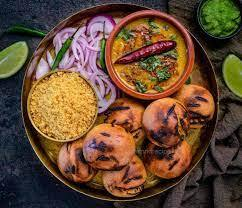
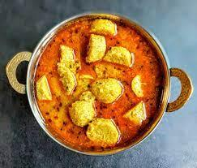
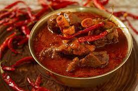
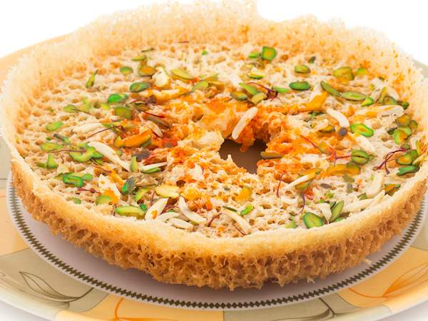
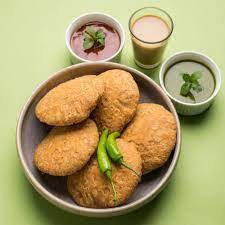

This is the state's classic signature dish. Baati is hard, unleavened bread cooked in the desert areas of Rajasthan. Baati is prized mainly for its long shelf life, plus it requires hardly any water for its preparation. It is always eaten with dal (lentil curry). The dal is made of lentils while churma is a coarsely ground wheat mixture crushed and cooked in ghee and jaggery or sugar.
Read
C

01
GATTE KI SUBZI
Most of Rajasthani cusine came to fruition as a result of the arid conditions. For this dish you don’t need any fresh vegetables and that’s its speciality. This curry is made with gram flour dumplings (steamed and lightly fried) and tangy gravy made up of tomato, buttermilk and spices. It’s best enjoyed with rotis (Indian flat bread) and rice.
Read
C

01
LAL MAANS
In this predominantly vegetarian state, the most famous non-vegetarian dish is laal maans. Laal maans literally means ‘red meat’ and the dish got its name because of its red color. Traditionally, laal maans used to be made with wild boar or deer. Today, it consists of marinated spicy mutton curry cooked on a low heat in a fiery sauce of red chillies, garlic paste, sliced onions and curds. A must-try for meat eaters.
Read
C

01
GHEVAR
The very mention of Ghevar lights up the eyes of innumerable sweet-lovers. This crunchy delight is a heaven for people with a sweet tooth. Available in various forms and shapes, Ghevar can aptly be called one of the crown dishes of Rajasthani food.
Read
C

01
PYAAZ KACHORI
The dish originated in Jodhpur, but the spicy snack is now popular across the country. Thus, having Pyaaz Kachori on the menu in a Namkeen (savoury) shop is a splendid idea. It is filled with onion fillings that comprise every spice in the history of Rajasthan.
They are served with Dhaniya, tamarind, or Pudina Chutney that combines as a superb evening snack.
Read
C

01
MALPUA
Malpuas are another authentic food of Rajasthan. This delicious dish, prepared from flour, milk, khoya and added dry-fruits. Complimentary servings include Rabdi with Malpua. Malpuas from Pushkar is famous, especially on MakarSankranti.